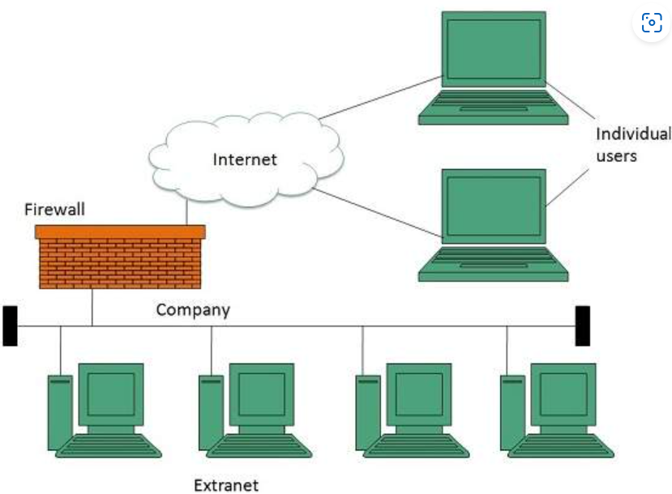
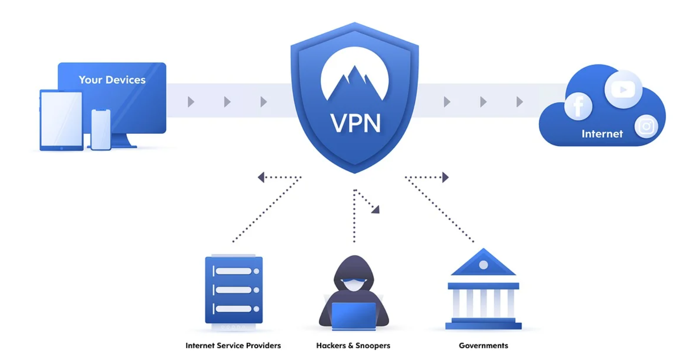

- It is a private network that allows controlled access to authorized external users such as business partners, suppliers, customers and clients.
- It falls between the internet and an organization's intranet.
- Unlike the internet which is open to everyone and the intranet which is only accessible to internal employees an extranet sits in between providing a secure and controlled environment for sharing information with trusted external parties.


It works by extending the organizations internal network to allow authorized external users to access specific parts of it. External users can access the extranet through a secure login using a username and password or through a Virtual Private Network (VPN). The extranet is protected by firewalls, encryption and other security measures to ensure that only authorized users can access the shared resources. Organizations can control exactly what information each external user can see and interact with making it a very flexible and secure way of sharing information.